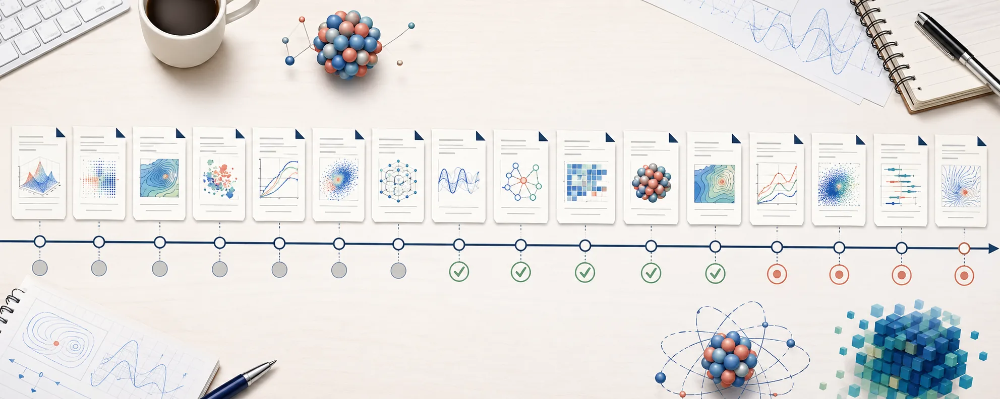
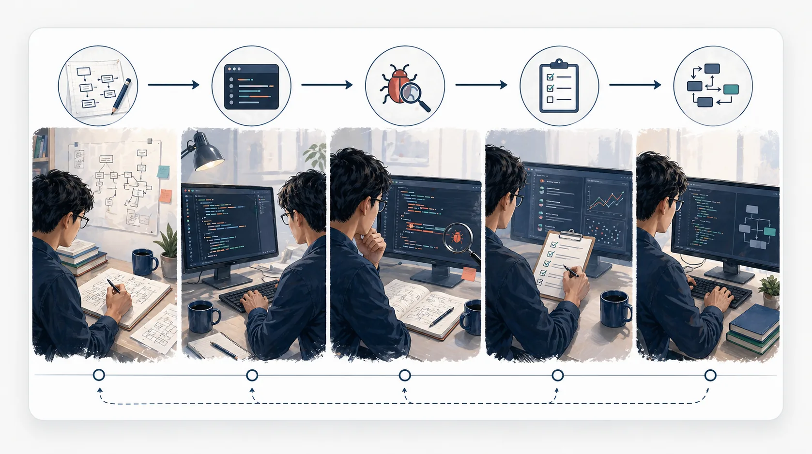
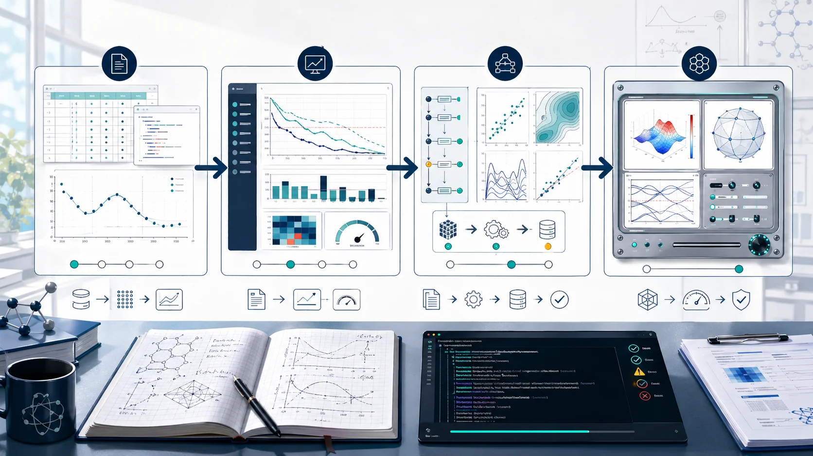
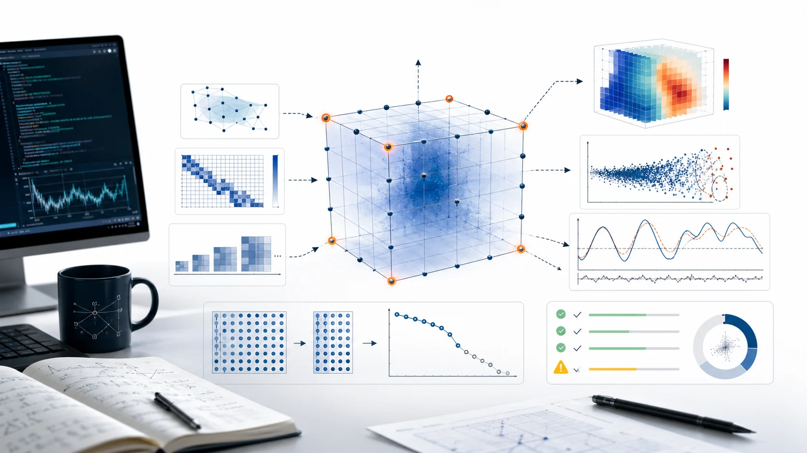
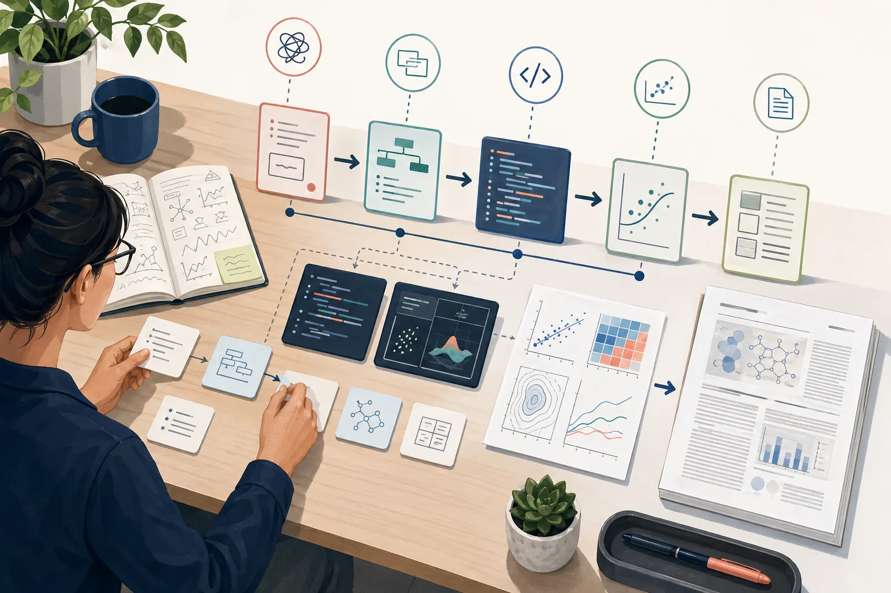

进真实项目目录
不要在空聊天里描述项目。先让 agent 看见代码、数据、README、旧图和日志。
cd <project> && claude
下面这两个数字来自同一个导师、同一套物理、同一类问题。变量只有一个：谁在写代码。

一个项目的智力内核（一个想法、一个算法、一个数值不稳定的来源）通常在几天到几周内结晶。 把它变成一篇发表论文，要花几个月到几年。 传统流程里，implementation overhead 占据绝大部分时间。
初学者最容易犯的错，是一上来让 agent 接管整个研究问题。第一次会话只应该做一次可验收的试跑： 让它读真实项目、定位一个小任务、生成一个可检查输出，然后停下来由你判断。
不要在空聊天里描述项目。先让 agent 看见代码、数据、README、旧图和日志。
cd <project> && claude
目标必须能在 10 分钟内验收，例如重画一张图、补一个 smoke test、解释一个报错。
让它先总结现状、入口、数据路径、风险点。没有读到文件之前，不接受实现方案。
哪怕只是一个旧数值、一张文献图、一个解析极限，也要先把通过标准写出来。
第一次会话的目标不是继续扩展，而是确认这个工作流是否能被你审查和控制。
把第一次会话压到最小：只读项目、选一个小输出、跑一个验证。这个模板的重点是让 agent 停在你能检查的地方。
今天只做一个 10 分钟试跑。 目标：<one small output> 允许改：<one file or no files> 验证：<one command / one figure / one number> 停止条件：输出结果后停下来，不要继续扩展。 请先只读相关文件，回答： 1. 你看到的项目入口是什么 2. 这个小目标最可能涉及哪些文件 3. 最小验证怎么做 4. 如果你不确定，请列出需要我确认的问题
传统编程的核心动作是“人把意图翻译成代码”。Vibe Coding 的核心动作变成： 人用自然语言、运行结果和反馈来驱动 AI 生成代码，再用测试和判断筛选结果。 也就是说，人从逐行施工者，变成了目标设定者、审稿人和系统导演。

人先把问题拆成架构、接口、算法和边界条件，然后手写实现、手动 debug、手动补测试。速度主要受“打字 + 查 API + 重构 + 细节记忆”限制。
人描述目标、约束和反馈，AI 快速生成实现。人的主要工作不是替 AI 写每一行，而是不断判断输出是否满足真实目标，并把系统拉回正确方向。
Vibe Research 不是“让 AI 做科研”。它是把 Vibe Coding 的速度引入科研流程， 但把问题选择、物理判断、验证标准、claim 边界和最终责任牢牢留在人这里。 AI 负责把人的判断快速变成代码、图、诊断、文献表和论文草稿；人负责判断这些东西是否真的构成物理。
什么问题值得做、哪个近似可接受、哪个 observable 能证明观点，这些不能外包。
代码实现、脚本、图表、文献整理、初稿和审稿回复，是 AI 最适合加速的摩擦层。
速度越快，越要把 benchmark、守恒律、单位、边界条件和 worst case 放在主流程里。
AI 可以写得漂亮，但 claim 的强度必须由证据决定。过度外推会毁掉可信度。
截至 2026 年 5 月，我自己的用法是：这两个工具不是谁替代谁，而是适合不同形态的工作。Claude Code 更像一个贴着 Claude 生态的终端研究助手； Codex 更像 OpenAI 生态里的工程 agent 平台，尤其适合并行 coding、页面构建和需要图像生成的工作流。
适合把长文档、PDF、代码库和科研上下文放在同一个会话里推进。对研究者来说，它的强项是读材料、 追上下文、按你的物理判断写代码和改论文相关文件。
适合构建页面、改代码、跑测试、并行拆任务，以及把 OpenAI 的工具能力接入工程流程。这个页面里的大量插图， 就是通过 Codex 环境调用 T2I 生成后落到项目资产里的。
在 Vibe Research 里，Claude Code 不是聊天窗口，而是研究执行伙伴。 真正的门槛不是会不会从零写代码，而是能不能把物理问题、边界条件、数据输入、验证标准和停止规则写清楚。 只有任务可执行，结果才可验收。
会 cd 到项目目录、启动 claude、让它读文件、跑脚本、看日志和错误。科研 agent 的价值，首先来自它能直接接触真实项目状态。
Git、环境、依赖、测试、日志、脚本入口和数据路径要能大概看懂。你不必手写每行代码，但必须能判断 agent 正在动哪里、为什么动。
写清 central claim、模型、参数范围、not in scope、benchmark、worst case 和误差预算。不要把 TBD 留给 agent，它会用猜测补空白。
看三件事：命令是否通过、结果图和数值是否亲眼检查、验收清单是否逐条满足。出错时先命名 root cause，再允许改代码。
不要一上来要求它重写整个求解器。先让它改一个你手边已有的文件，再把一个重复分析动作固化下来。 最后形成只服务这个物理问题的诊断工具、批处理管线或 reduced-basis 原型。
清洗 CSV、改配置、补 README、重画一张图。
把 residual、runtime、误差分布放到同一页。
从输入参数到图表、日志和 summary 自动跑通。
为一个真实物理问题沉淀 solver、emulator 或 audit 工具。

官方文档的核心可以压成几条研究规则：让 Claude 有办法验证自己的工作，先探索再计划，给具体上下文，主动管理 context。 在 Vibe Research 里，这些规则对应到 benchmark、诊断图、项目说明书、会话切分和子任务隔离。 Claude Code Best Practices
不要只说“实现这个方法”。同时给 benchmark、expected output、误差预算和测试命令，例如 Coulomb phase、unitarity 或 emulator worst-case 回跑。
复杂任务先进 Plan Mode：先读 Hamiltonian、配置、数据路径和旧 benchmark，再列修改文件和验证路径。跨模块改动必须先计划。
用 @ 指文件，贴完整错误、config、图、日志和一小段数据。不要让 Claude 猜“哪个脚本”“哪张图”“哪条曲线”。
单位、相位、边界条件进 CLAUDE.md；领域流程做成 skill；“无 benchmark 不许生产运行”这类硬规则交给 hook。
无关任务之间用 /clear。连续两次纠偏还错，就重开会话，把学到的限制写进新 brief。长任务结束前写 handoff。
调查类任务用 subagent；批量扫参数、分波或核素时用 claude -p、多会话或 fan-out，但必须限制工具权限和写入范围。
CLAUDE.md 写成长教程
结果看似合理但没有验证
无范围地“帮我调查一下”

模糊说法是“帮我看看 emulator 稳不稳”。可执行说法必须把问题压成 claim、输入、benchmark、误差预算和停机条件。
CLAUDE.md 是研究说明书它应该短、直接、可判断：Hamiltonian、单位、相位约定、输入输出、禁止修改的边界、验证命令， 以及长会话压缩时必须保留的物理决策原因。
对大改动先看计划：改哪些文件、为什么改、影响范围是什么、会用哪个 benchmark 验证。 方向不对时，越早停越便宜。
把重复出现的好习惯封成技能：先规划、先验证、先定位根因、引用必须核查、claim 必须有证据。
research-planning、debug-physics-first、prc-writing 都是在固定这些路径。
Vibe Research 不是把问题扔给 AI，然后等论文掉出来。它更像一个研究操作系统： 每一步都明确谁负责、停在哪个 checkpoint、什么结果必须由人来判定。
AI 写出来的代码越快，验证链越要硬。每个研究项目都应该有一张小的 validation matrix： 它不追求覆盖所有情况，而是覆盖最容易让物理出错的地方。
AI 加速以后，真正该保存的不是“它写过什么”，而是每个物理结论背后的证据链。 论文里越强的句子，越应该能一路追到脚本、配置、commit 和失败条件。
下面是三段从 ahu-talk 的两个 PRC 项目里抽出来的会话脚本，我把它做成可逐步播放的伪终端。 关键节点会跳出 Expert Filter 提醒，需要你点确认才继续 — 这正是真实研究中你应该做的。
真正省时间的地方不只是写代码，而是把本地验证、HPC 调度、诊断图、误差预算和论文图表变成连续管线。 这部分适合让 Claude 做大量机械工作，但每个阶段都要留下可复现证据。
LLM 最危险的地方不是报错，而是把错误写得很顺。下面这些模式都适合做成项目里的 regression test 或 review checklist。
Skill 是带触发词的"封装好的工作流"。在 Claude Code 里输入 /skill-name 或者命中触发词时自动加载。
点击卡片复制调用样例。
写作阶段最该让 AI 加速的是结构化整理：文献证据、图表叙事、审稿意见回应。最不该交给它的是 claim 的边界。
好的会话不是从“帮我看看”开始，而是从边界条件开始：今天的目标、允许它改什么、 禁止它自作主张什么、什么时候必须停下来等你审。

这些是我常用的 prompt 骨架。复制下来，把尖括号里的占位符换成你的内容，再粘到 Claude Code 里。
Vibe Research 的反直觉推论：LLM 不是民主化研究，是放大专家优势。 没有 Expert Filter 的人照搬这套流程，会高速产出错的物理。 下面 8 条你都能诚实勾选时，再开始。